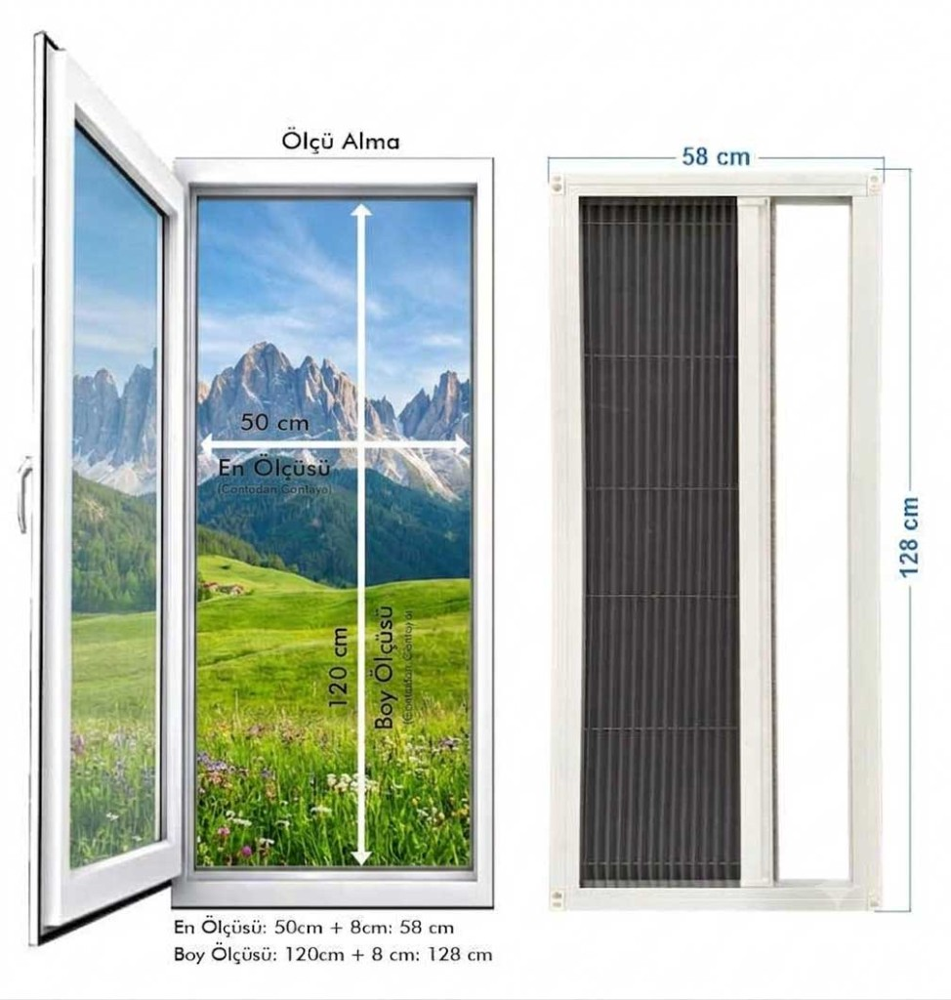

Sineklik Ölçüsü Nasıl Alınır? Adım Adım Rehber
Pencere ve kapı sinekliği ölçüsünü contadan contaya nasıl alacağınızı, kasa payını ve sık yapılan hataları adım adım anlatıyoruz.
Edeka Kapı'nın yıllara dayanan otomatik kapı tecrübesiyle Kayseri'de sineklik üretip monte ediyoruz; bu süre içinde fark ettiğimiz bir şey var: insanların sinekliğe dair en çok kafa karıştıran sorusu hep aynı — "ölçüyü nasıl alacağım?" Haklılar da. Bir-iki santimlik bir hata bile, sinekliğin ya sıkışmasına ya da kenarlarda boşluk kalıp tüm emeğin havaya gitmesine sebep olabiliyor. Bu yüzden bu sayfayı, atölyede ve sahada gördüğümüz gerçek detaylarla, olabildiğince açık yazmaya çalıştık.
Kayseri içindeyseniz açıkçası bu yazıyı okumanıza bile gerek yok — ekibimiz gelip ölçüyü kendisi alır, siz hiç uğraşmazsınız. Ama şehir dışındansanız veya merak ediyorsanız, aşağıda kendi ölçünüzü nasıl çıkaracağınızı adım adım anlatıyoruz.
Elinizin altında olması gerekenler
- Bir şerit metre — mümkünse metal olanı tercih edin, plastik metreler özellikle uzun ölçülerde hafif eğilip yanlış sonuç verebiliyor
- Not almak için kalem kağıt (telefonunuza not da yazabilirsiniz tabii, ama elinizde iki ölçü aleti varken kağıda yazmak daha pratik oluyor)
- Geniş balkon kapılarında işinizi kolaylaştıracak bir su terazisi, ille gerekmiyor ama elinizdeyse iyi olur
Önce pencere tipinizi belirleyin
Burası önemli, çünkü pencere ve kapı tipine göre ölçüm mantığı biraz değişiyor:
- Sürme (yana kayan) pencereler ve balkon kapıları — genellikle raylı sistem sineklik ya da plise (akordeon) sineklik kullanılıyor
- Açılır kanat pencereler — burada mıknatıslı veya menteşeli sineklik daha çok tercih ediliyor
- Geniş açıklıklar (büyük balkon kapıları, vitrin tipi pencereler) — plise sineklik genelde en pratik çözüm oluyor
Hangi tipte olduğunuzu bilmek, hangi noktalardan ölçüm yapacağınızı da netleştiriyor.
Sürme pencere ve balkon kapılarında ölçüm
Sürme sistemlerde en çok karıştırılan şey, rayın içten mi dıştan mı takılı olduğu. Önce buna bakın. Sonra üst ve alt ray arasındaki mesafeyi ayrı ayrı ölçün — ikisi birbirinden farklı çıkabiliyor, özellikle eski binalarda. Ölçüyü alırken pencereyi tam kapalı konuma getirmeniz de önemli, açık pencerede aldığınız ölçü size yanıltıcı bir sonuç verir.
Burada bir ayrım daha var: bazı sineklikleri içten, bazılarını dıştan monte ediyoruz — bu, pencerenizin/kapınızın yapısına ve sizin tercihinize göre değişiyor. İçten ölçüm genelde kasa boşluğunu baz alır, dıştan ölçümde ise pencerenin dış kasası referans noktası olur. İkisi arasında doğru olanı seçmek, sinekliğin tam oturup oturmamasını belirliyor — bu yüzden emin değilseniz, fotoğraf çekip bize gönderin, biz hangi yöntemin sizin pencereniz için doğru olduğunu söyleriz.
Açılır kanat pencerelerde ölçüm
Kanat pencereler Türkiye'de en yaygın pencere tipi, ve genelde mıknatıslı veya menteşeli sineklik bu tipte kullanılıyor. Burada yapmanız gereken oldukça basit: önce pencerenin net genişlik ve yükseklik ölçüsünü alın, sonra her iki yan çıtadan birer santim kadar pay bırakın. Kasa ile duvar arasında bir boşluk varsa onu da ölçüye dahil edin, yoksa sineklik takıldığında o boşlukta hava akımı ya da küçük bir aralık kalabilir.
Mıknatıslı sineklik özelinde bir şey daha söyleyelim: bu tip kasaya mıknatısla tutunduğu için ölçünün gerçekten net olması gerekiyor. Genişliği pencerenin iç kenarından, yüksekliği de çerçevenin alt ve üstünden ölçün, çıtaların dışına taşmayın — taştığınızda mıknatıs kasaya düzgün oturmuyor ve zamanla sineklik gevşeyebiliyor.
Geniş balkon kapılarında ölçüm
Açıklık genişledikçe hata payı da büyüyor, bu yüzden geniş balkon kapılarında biraz daha dikkatli olmak gerekiyor. Kapı açıklığını üstten, ortadan ve alttan üç farklı noktadan ölçün, ve bunlardan en geniş olanı esas alın. Yüksekliği ölçerken zemindeki eğime de göz atın — bazı balkonlarda zemin tam düz değildir, bu da yükseklik ölçüsünü etkileyebilir.
Raylı sistem kullanacaksanız, rayın genişliğini, üstten alttan toplam yüksekliği ve ray derinliğini ayrı ayrı not edin. Bu üçü birlikte, kapıya tam oturan bir sineklik için gereken tüm bilgiyi veriyor.
Plise (akordeon) sinekliklerde ölçüm
Plise sineklik ölçüsü, açıkçası en dikkat gerektiren ölçüm türü — çünkü akordeon gibi katlanan bir yapısı var ve bu katlanma için bir pay bırakmanız gerekiyor. Bizim üretimimizde, her 1 metre genişlik için yaklaşık 2 cm katlanma payı hesaba katıyoruz; siz ölçü gönderirken bunu düşünmenize bile gerek yok, biz bu hesabı kendi tarafımızda yapıyoruz, ama nereden geldiğini bilmeniz isterseniz diye not ettik.
Sizin yapmanız gereken, açıklığın enini ve boyunu ölçmek. Geniş bir kapı veya pencereyle çalışıyorsanız, bu işi tek başınıza yapmaya çalışmayın — bir kişi metreyi tutarken diğeri okusun, böylece hem daha doğru ölçer hem de büyük bir açıklıkta metrenin eğrilmesini önlersiniz.
Bizim eklediğimiz kasa payı

Şunu bilmeniz önemli: siz bize gönderdiğiniz ölçü, iç (net) ölçü oluyor — yani pencerenin veya kapının açıklığını, çıta içinden aldığınız ham rakam. Biz üretim sırasında bu ölçüye 4 cm kasa payı ekliyoruz. Yani siz ekstra bir hesap yapmıyorsunuz, sadece doğru net ölçüyü bize iletmeniz yeterli, kasa ve mekanizmanın gerektirdiği payı biz hesaplıyoruz.
Montaj nasıl oluyor
Sinekliğiniz hazır olduğunda, pencereye veya kapıya 4 adet vidayla sabitleniyor. İçten mi dıştan mı monte edileceği, yukarıda bahsettiğimiz gibi pencerenizin yapısına göre değişiyor — bazen içten, bazen dıştan daha sağlam ve düzgün oturuyor, ekibimiz bunu sizinle birlikte değerlendiriyor. Kasanın terazisinde, düzgün oturması montajın en kritik noktası; yamuk bir montaj zamanla sarkmaya veya kanadın zor açılmasına yol açabilir.
Ölçüm yaparken sık yapılan hatalar
En sık gördüğümüz hata, tek bir noktadan ölçüp o rakama güvenmek. Pencere kasaları görünüşte simetrik dursa da, gerçekte birkaç milimetre fark çıkması çok normal. Bu yüzden her kenarı en az iki, mümkünse üç farklı noktadan (üst-orta-alt, sol-orta-sağ gibi) ölçüp en dar rakamı esas almanızı öneririz. Rakamları not ederken de yuvarlama yapmayın — "yaklaşık 120" değil, gerçek ölçtüğünüz 119,5 neyse onu yazın. Milimetre hassasiyeti, montaj sonrasında karşınıza çıkabilecek küçük sürprizleri büyük ölçüde önlüyor.
Emin değilseniz
Kendinize şu üç soruyu sorun: Pencere veya kapı tipini doğru belirledim mi? Ölçüyü en az iki noktadan kontrol ettim mi? Kasa ve çıta paylarını hesaba kattım mı? Üçüne de "evet" diyorsanız, ölçünüz büyük ihtimalle sağlam. Hâlâ tereddüt ediyorsanız, bizi aramanız ya da WhatsApp'tan pencerenizin fotoğrafını göndermeniz daha hızlı ve güvenli olur — bu tip durumlarda telefonda beş dakikalık bir konuşma, yanlış ölçülmüş bir sinekliğin verdiği zaman ve para kaybından çok daha ucuza geliyor.
Standart dışı bir durumunuz varsa
Pencereniz veya kapınız standart ölçülerin dışındaysa, ya da yukarıdaki anlattığımız tiplerden hiçbirine net bir şekilde uymuyorsa, hiç zorlamayın — bize ulaşın. Teknik ekibimiz fotoğraf ve kendi aldığınız ölçüler üzerinden size doğru yöntemi gösterir.
Bir de şunu eklemek isteriz: evde kediniz veya köpeğiniz varsa, standart sineklik tülü onlar için yeterince dayanıklı değil — tırnaklarıyla kolayca delip yırtabiliyorlar. Böyle bir durumunuz varsa, özel güçlendirilmiş tül kullandığımız Kedi Sinekliği modelimize göz atmanızı öneririz.
Ölçünüzü aldıktan sonra sitemizdeki fiyat hesaplayıcımıza girip anlık fiyatınızı görebilirsiniz. Siparişiniz onaylandıktan sonra 1-3 iş günü içinde üretim ve montaj tamamlanıyor. Kayseri içindeyseniz bu süreci biz yönetiyoruz, şehir dışındaysanız ürününüzü güvenli kargoyla gönderiyoruz.
WhatsApp'tan Ölçü Desteği Al